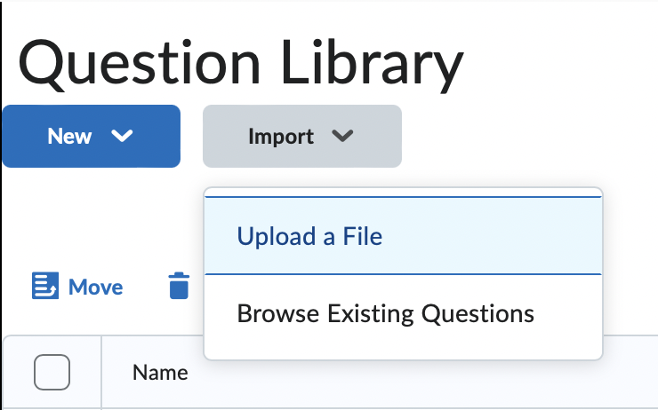

1. Overview
The objective of BSGenerator is to allow instructors to create and maintain
a library of questions offline, prior to using them in Virtual Learning Environments
(VLEs) such as Brightspace. Questions are specified using an extended
CSV-syntax, which can be enriched with Python code.
Once a question (or a set of questions) has been created,
BSGenerator can create QTI packages, which can be used to upload questions
to the VLE's Question Library, or indeed upload quizzes created offline to the VLE.
Similarly, questions and quizzes created in Brightspace and exported as QTI packages
can be imported into BSGenerator.
1.1 BSManager vs. BSEditor

BSGenerator is a software bundle currently composed of two tools:
BSEditor (previously known as BSInter) and BSManager. BSEditor is
responsible for creating and testing CSV question specifications, whereas the main
task of BSManager is Digital Asset Management (DAM). Think of them as a duo akin to
Adobe Lightroom vs. Adobe Photoshop: Lightroom is used to maintain your collection of
photos (with minimal editing), whereas Photoshop is used for artistic creation,
single-photo edits, etc. Like Lightroom/Photoshop, there is some overlap between
BSManager and BSEditor:
BSManager:
- Inspect CSV questions and QTI packages;
- Create/edit metadata;
- Export sets of questions as QTI packages;
- Create quizzes;
- Inspect analytics related to CSV/QTI packages.
BSEditor:
- Create CSV question specifications;
- Visualise/test questions;
- Export CSV questions as QTI packages;
- Import CSV questions from QTI packages;
- Create/edit question metadata.
1.2 Brightspace
Brightspace is a VLE that facilitates the distribution of learning content,
management of assessment elements, etc. It provides the means to maintain a question
library, which allows the import and export of questions to include in quizzes.
It is (at the moment) the only VLE that BSGenerator is compatible with.
1.2.1 Quizzes
Quizzes in Brightspace are composed of one or more questions, of the
following question types:
- True/False (T/F):
Like a multiple choice question, but with only two options, "True" and
"False".
- Multiple-Choice (MC):
A typical multiple-choice question, allowing from 1 to many choices,
partially-correct choices, enumeration of choices, feedback per choice,
etc.
- Multi-Select (MS):
Allows the students to select one or more correct options, or a
fixed number of options.
- Written Response (WR):
Expects a phrase, paragraph or short essay as an answer; it is the only
question type that cannot be automatically corrected.
- Short Answer (SA):
Expects one or more short textual and/or numerical answers, by presenting
blank text input boxes at the end of the question. If more than one answer
are expected, it labels them as "Blank #1", "Blank #2", etc.
- Multi Short Answer (MSA):
Similar to an SA question with multiple blanks, but the order of the
answers does not matter, i.e. a set of possible answers is specified, and
the student can put any of those answers in any of the blanks (which are
unlabelled).
- Fill-in-the-Blanks (FIB):
Similar to the previous two, but the blanks do not appear all at the end
of the question, i.e. it can mix text and blanks. Each blank expects a
specific answer (or an answer from a set of possible answers).
- Matching (MAT):
Presents a list of questions, and a list of answers, and the student
must match each question with a corresponding answer (several questions
may have the same answer, and not all answers need to be used).
- Ordering (ORD):
Similar to MAT, but for each question item, an order (1, 2, 3...) must
be chosen. The same order number may be picked for different items, and
not all order numbers need to used.
- Arithmetic (2+2):
Expects a numeric answer from the student. The lecturer can specify some
variables, which will allow for different numerical answers to be
expected from each student. (format not supported by BSGenerator)
- Significant Figures (x10):
Somewhat similar to 2+2 questions, but works with values in scientific
format (and expects answers in that format as well). (format not
supported by BSGenerator)
- Likert (LIK):
Queries the studen's opinion regarding a statement. The student should
pick an item for a likert scale, such as a numeric score, agreement
strenght, frequency, etc. Typically only used for surveys, not quizzes.
Brightspace allows users to either create questions through its web
interface, or to upload pre-made questions. For the latter, there are two
possible formats: CSV files, and IMS QTI compliant Course Packages.
1.2.2 CSV Format
The CSV format accepted by Brightspace is somewhat limited. It is restricted to
T/F, MC, M+S, WR, SA, MAT, and ORD question types. It also restricts the
question to simple text format (i.e. without formatting), allows no file or
image attachments, and has several other limitations, such as (crucially)
setting options such as randomisation of the possible answers on T+F and MC
question type, etc. It does allow uploading several questions within a single
CSV file, although these will all be uploaded to the root of the Question
Library (or onto whichever section has been created and navigated into).
1.2.3 QTI Format
This is a format specified by the IMS Global Learning Consortium, which
defines a format to specify assessment content and results that can then be
exchanged between systems. It is mainly used for question design exchange
between systems, although its design allows for exchange of other elements,
such as tests, results, etc. Several learning tools are certified QTI
Compliant, most notably Brightspace (Desire2Learn), Blackboard, and Moodle.
There are several versions of the format, and different tools are certified for
different versions.
This is a very powerful format, but not straightforward to use. It consists of
a zip package, which contains a manifest and a question database, along with
potentially other supporting documents.
The format used by Brightspace is a QTI format enriched with several
extensions. The zip package contains the following files:
- imsmanifest.xml: This is a short XML file, whose role seems to be
solely to describe the type of the package. Regardless of the number and type
of questions (and other files) to upload, this file seems to always be
identical.
- questiondb.xml: This is a fairly complex XML file, which defines
the question(s) and/or section(s) to upload.
- Other files: other files might be included, such as images that may
be referenced from the text of the questions, or indeed folders containing
those images. Any such files included in the zip package will be made available
in Brightspace in the usual way, and can hence be referenced/linked to from the
question(s) text.
The following figure shows the Brightspace import option to upload a
question; it can be found under “Assessment / Quizzes / Question Library”.
